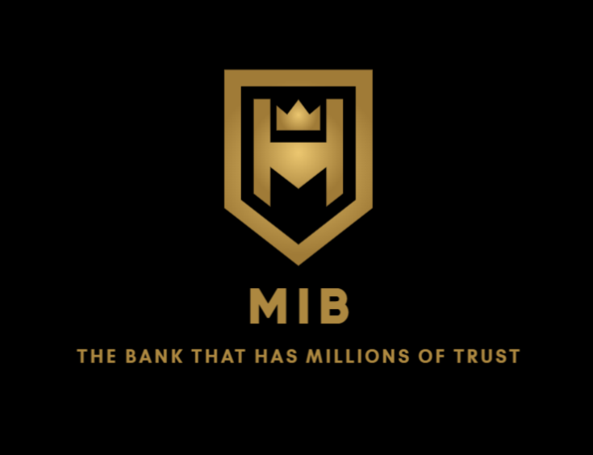

Madras Indian Bank
About Us
Bank Profile
Welcome to
Madras Indian Bank the bank that carries with it a tradition of 105 years and yet is young enough to adapt itself to the rapidly changing scenario in the banking industry.
Our Vision
DELIGHT THE CUSTOMERS CONTINUALLY BY BLENDING TRADITION WITH TECHNOLOGY TO DELIVER INNOVATIVE PRODUCTS AND SERVICES AT AFFORDABLE RATES THROUGH A PAN INDIA BRANCH NETWORK
Origin
Madras Indian Bank was started in the year 1916 in Karur, then a small textile town with a vast agricultural background, by two illustrious sons of the soil –
Sri M.A. Venkatarama Chettiar and Sri Athi Krishna Chettiar. What started as a venture with a seed capital of Rs. 1.20 lakh has grown into a leading financial institution that offers a gamut of financial services, under one roof, to millions of its customers.

Financial landmarks of the bank as on 31.03.2021
- Total business of the bank was at Rs. 116098 cr. with total deposits at Rs. 63278 cr and total advances at Rs. 52820 cr.
- The Net Profit for FY20-21 was Rs. 359 cr.
- The net owned funds of the bank are Rs. 6960 cr
- The Basel III CRAR was at 18.98% with CET1 of 16.95%
- The Net NPA was at 3.41%.
- The bank has been earning profits since inception and has been declaring dividend uninterruptedly.
- The bank has declared 100% or more dividends since 2003-04. Between 2007-08 and 2010-11, the dividend was 120%. While for 2011-12, 2012-13 and 2015-16, dividend was 140%, 130% dividend was declared for 2013-14, 2014-15 and 2016-17.
Branch and ATM network
The bank had a branch network of 780 and an ATM and Cash Recyclers network of 2236 as on 31.03.2021.
Technological Accomplishments
MIB is one of the earliest banks in the country to achieve full networking of its branches under Core Banking Solutions. The Bank has always been a frontrunner in adopting and leveraging on technology to offer products and services to its customers. The Bank was one of the pioneers in deploying ATMs, Bunch Note Recycler Machines, fully automated passbook printers & Cheque Deposit Kiosks as a move towards self- service banking. The Bank also set a blazing trail in implementing Internet Banking and Mobile Banking to its customers.